The Pleistocene Ice Ages
EES 2110
Introduction to Climate Change
Jonathan Gilligan
Class #20: Friday, February 24 2023
Solving the Ice-Age Puzzle
Discovery of the Pleistocene Ice Ages
-
Striations in rocks
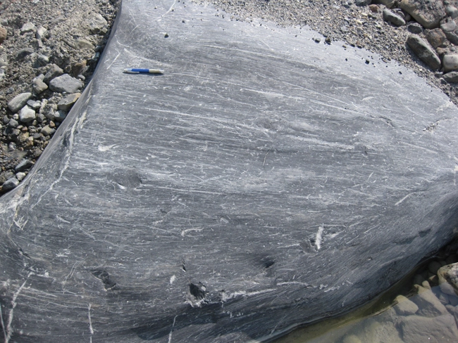
-
Erratic boulders
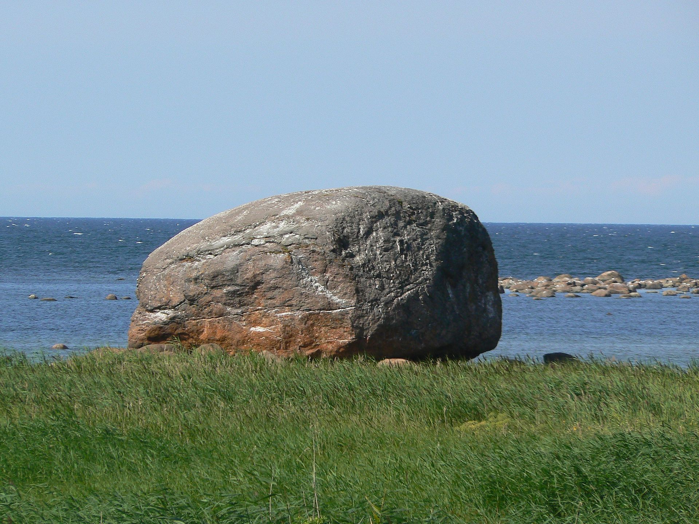
-
Moraines
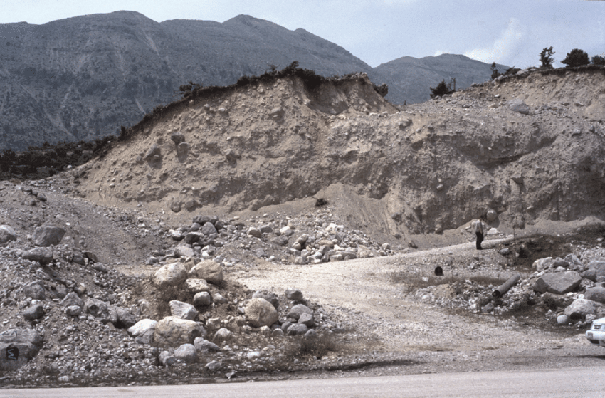
-
1830s: Louis Agassiz observed glacial traces throughout Northern Europe:
… great sheets of ice, resembling those now existing in Greenland, once covered all the countries in which unstratified gravel (boulder drift) is found.
Solving the Ice-Age Puzzle

Deep-Sea Sediments
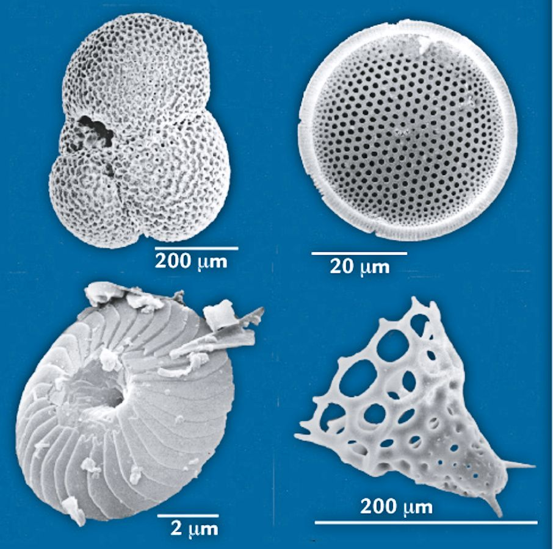
Past Sea Levels
- Water vapor, rain, snow is always isotopically lighter than sea water
- Snow, ice on land remove light isotopes from ocean
- Bigger glaciers:
- Lower sea-level
- Greater (positive) \(\delta \ce{^{18}O}\) in ocean sediments
- Smaller glaciers:
- Higher sea-level
- Smaller \(\delta \ce{^{18}O}\) in ocean sediments

Sediment Climate Record

Sediments and Ice Ages
- Deep-sea sediments provide dates for Pleistocene glaciations and deg laciations.
- Timing lines up with orbital forcing
- Summer sunlight intensity in high Northern latitudes
- Problem:
- Orbital variations in solar intensity are too small to cause the big changes in glaciation
- There must be positive feedbacks
- Ice-Albedo and \(\COO\) feedbacks
- Orbital variations kick things off, but …
- … positive feedbacks amplify the heating/cooling to produce cycles of ice ages
CO2 Feedbacks
- What do you do to keep an opened bottle of soda fizzy?
- Solubility
- More CO2 dissolves in cold water than warm water
- As global temperatures cool, more CO2 can dissolve into the oceans.
- Currents
- Surface oceans saturate with CO2
- Deep oceans can hold much more
- Currents slowly move CO2 from surface to deep oceans
- Climate change affects ocean currents that move water between surface and deep oceans.
Comparing theory and observation
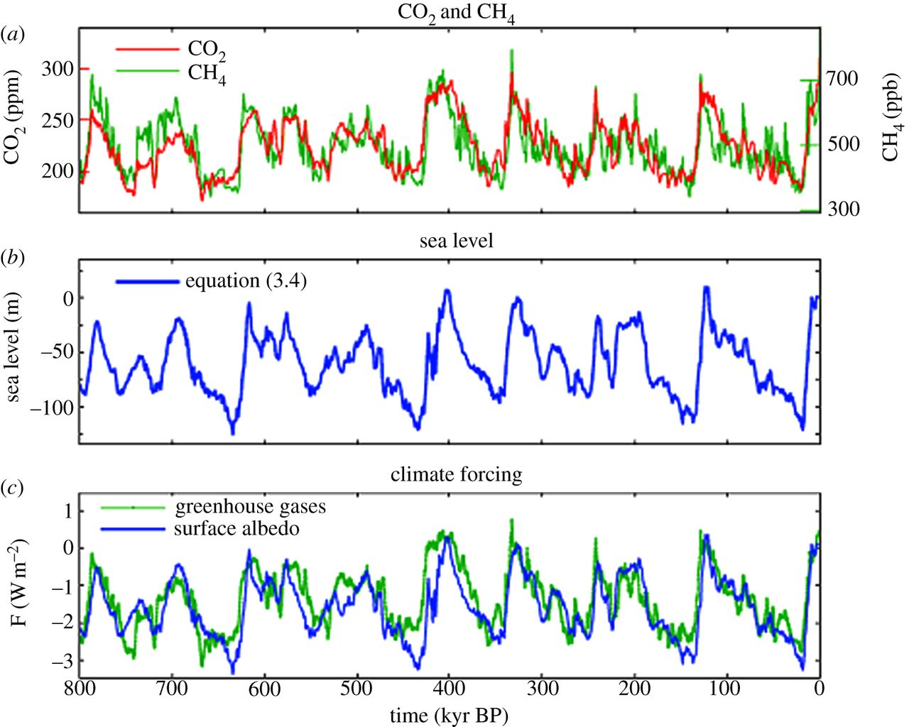

Timeline:
- 1820s: Fourier discovers greenhouse effect
- 1830s: Agassiz discovers past glaciations
- 1840s–60s: Discovery of greenhouse gases (CO2 and H2O)
- 1890s: Scientists speculate that natural variations in CO2 is responsible
- 1930s: Milutin Milankovitch develops orbital-variation theory
- 1970s: Testing the theory:
- Invention of isotopic analysis
- Deep-sea cores
- Scientists can finally figure out the timing of the cycles:
- When did glaciations begin and end?
- Beginnings and endings of ice-ages matched Milankovitch’s theory
Florida Through History
Florida 10,000 years ago
End of last ice
age:
Sea level 400 feet lower
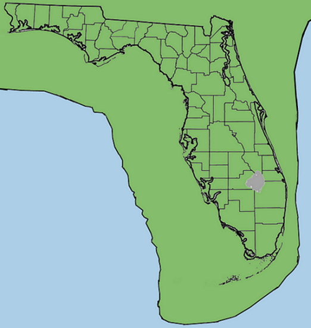
Florida 5 million years ago
Last
time CO2 was at today’s levels.
Sea level around 20
meters higher
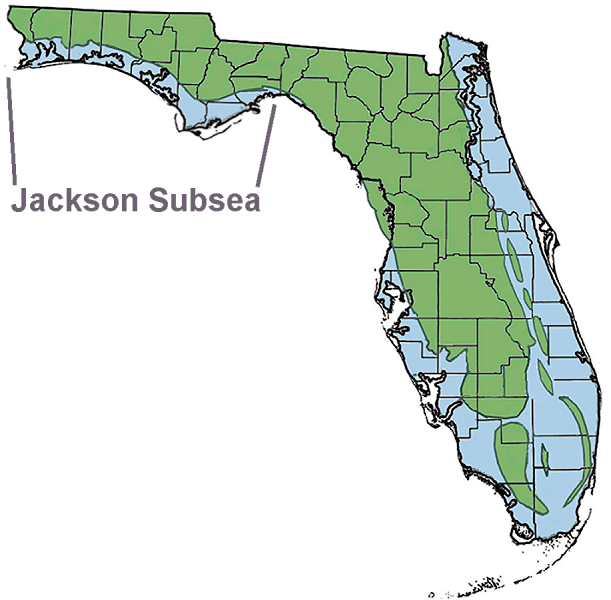
Florida 50 million years ago
Three times
present CO2.
Sea level >70 meters higher
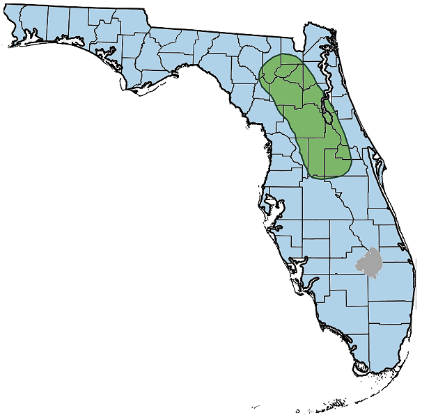
Summary of Past Sea Levels
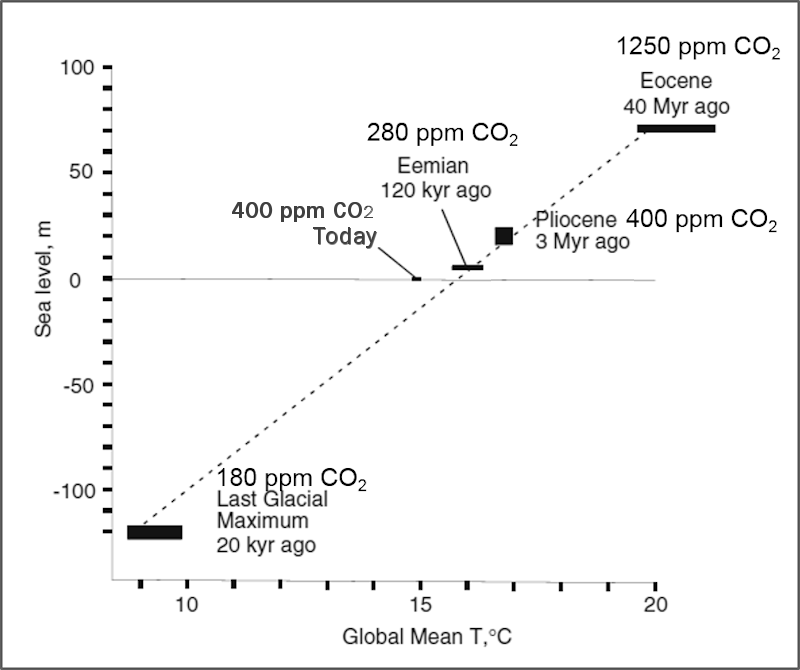
Other Evidence
of Past
Climates …
Other Evidence of Past Climates …
- Sediments tell us about history:
- Bottom \(\rightarrow\) top = oldest \(\rightarrow\) youngest
- White carbonate sediments
- Red clay layer:
- ~55 million years ago
- Almost no carbonates
- What does red layer tell us?
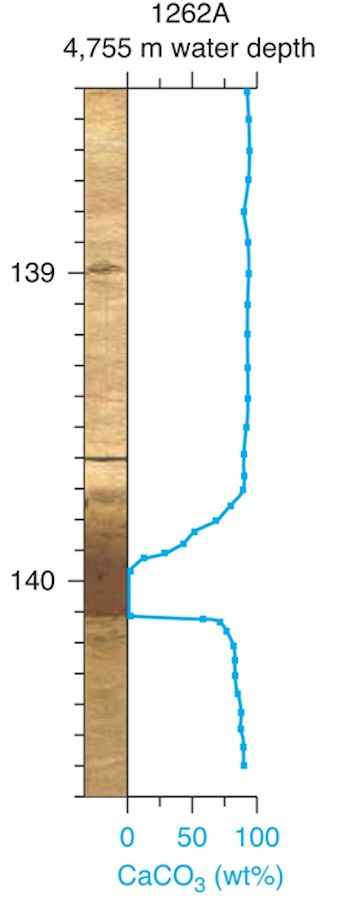
Other Evidence of Past Climates…
\[ \calcite \rightleftharpoons \Caplus + \carb \]
- Alkaline Ocean:
- High \(\carb\): Reaction runs \(\Leftarrow\)
- Carbonates survive on sea floor
- Acid Ocean:
- Low \(\carb\): Reaction runs \(\Rightarrow\)
- Carbonates dissolve
- Only clay is left
- Red clay layer \(\Rightarrow\)
ocean acidification
- Large burst of \(\COO\) into atmosphere.
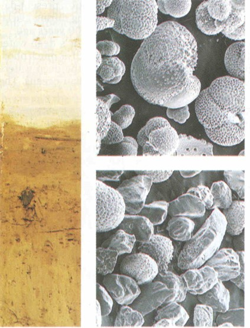
Other Evidence of Past Climates…
\[ \calcite \rightleftharpoons \Caplus + \carb \]
- Just below red clay layer, \(\delta \ce{^{13}C}\) drops suddenly.
- What does that tell us?
- Lower \(\ce{^{13}C}\) means rise in \(\COO\) came from organic source.
Paleocene-Eocene Thermal Maximum
- 55 million years ago
- 1500–4500 GT carbon added to atmosphere in 1000 years
- Compare:
- 600 GT in atmosphere in 1700s,
- 884 GT today
- Known fossil fuels: ~5000 GT
- Compare:
- Temperature rose 5–9°C (9–16°F)
- Ocean at North Pole was about 23° C (73° F).
- Breadfruit & other tropical trees grew in Canada
- Lasted ~120,000 years
- Transition to cooler temperatures took ~40,000 years
- Eocene \(\rightarrow \cdots
\rightarrow\) Pliocene \(\rightarrow\) Pleistocene
- Gradual cooling for 50 million years
- Ice age glaciation of North America, Europe begins ~2.8 MYA
Climate in the
Last
Millennium
Walker River
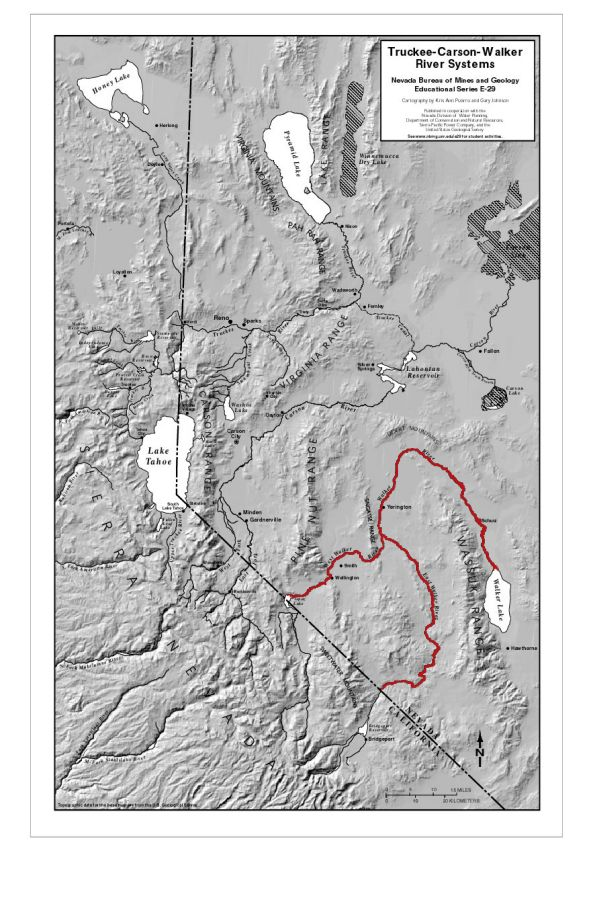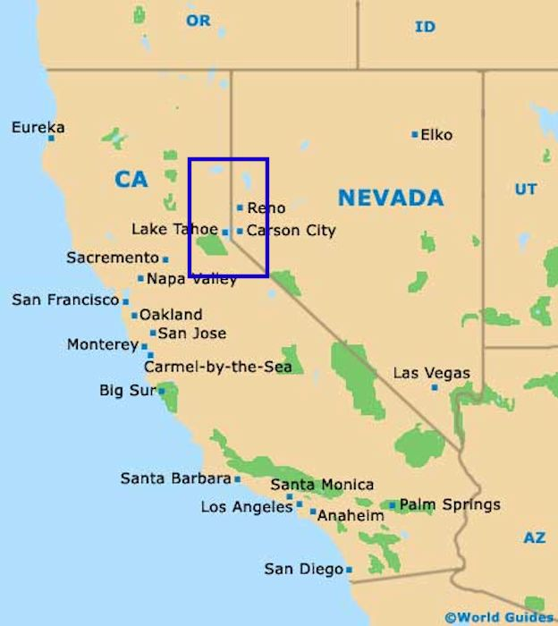
Relict Tree Stumps
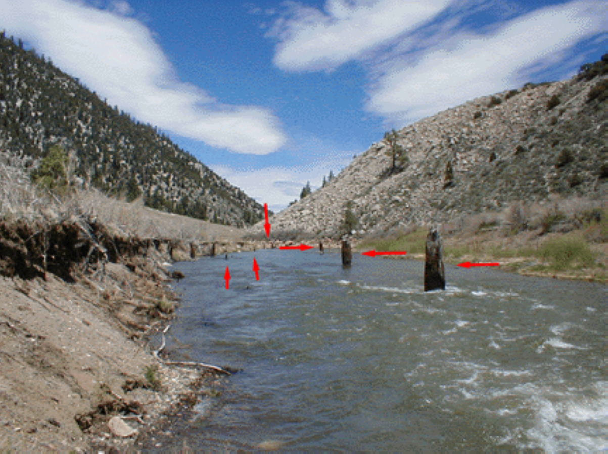
Relict Tree Stumps
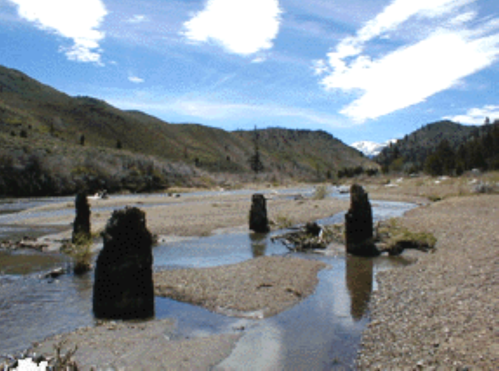
Lake Tanaya, Yosemite
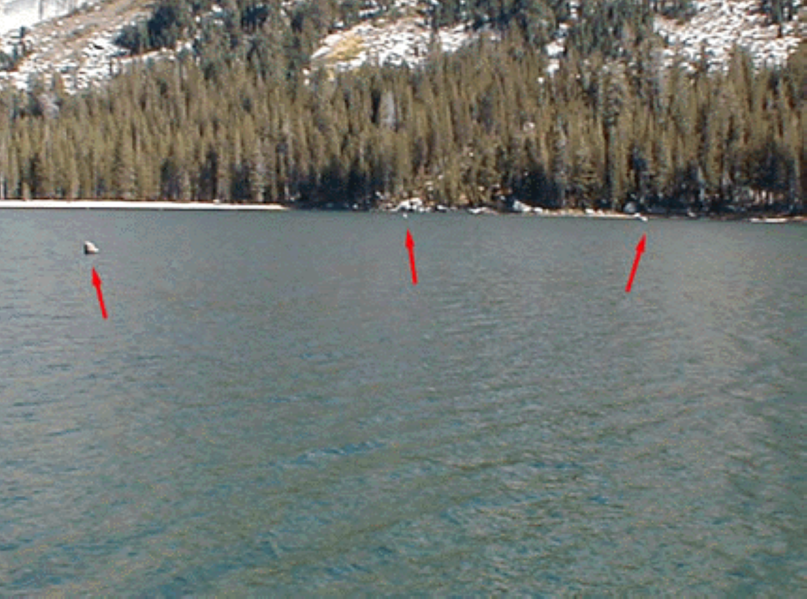
Chaco Canyon
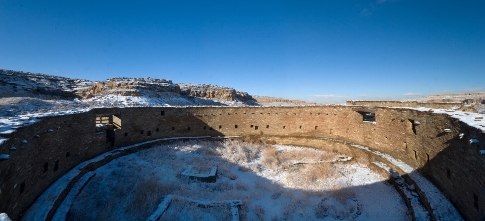
Reconstructing Megadroughts
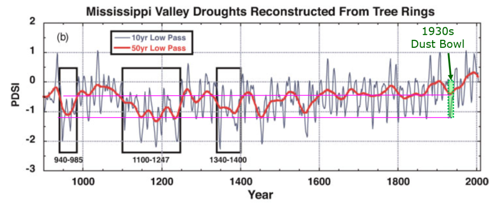
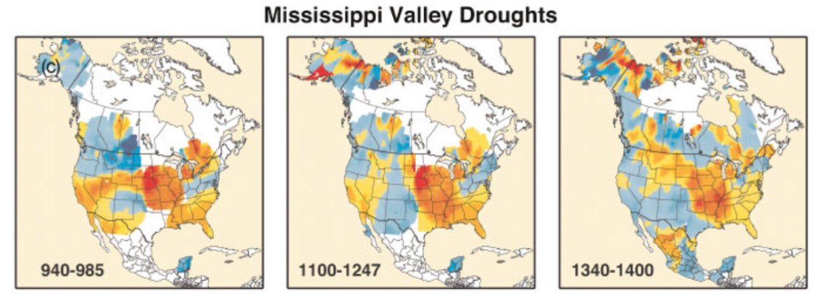
Dust Bowl vs. Megadroughts
- 1930s “Dust Bowl”
- 6 years
- 25% reduction in rainfall in plains states
- Hundreds of thousands of refugees
- Medieval Megadroughts:
- Multiple droughts
- 60 years or longer (up to 240)
- 40% reduction of rainfall in plains states
- New research (2022):
- Current drought in the Southwest is the most severe since the medieval megadroughts.